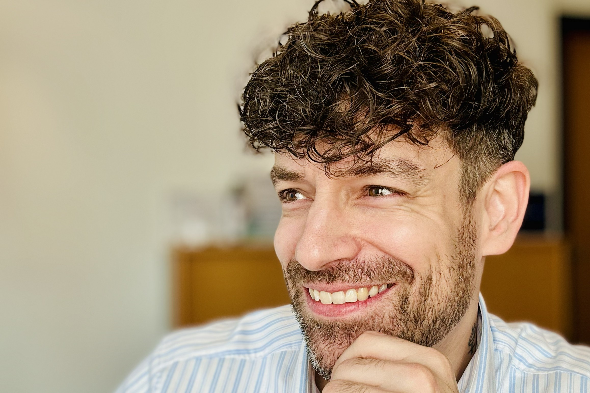

Mein Ansatz verbindet rationales Mentaltraining mit dem intuitiven Wissen um kosmische Rhythmen.
Seit über 19 Jahren bewege ich mich im Vertrieb der Finanzbranche. Ein Umfeld, das stark von Zielen, Zahlen und Ergebnissen geprägt ist. Was dabei im Alltag oft in den Hintergrund rückt, ist der Mensch dahinter. Ich habe immer wieder erlebt, dass die größten Herausforderungen nicht fachlicher, sondern mentaler Natur sind. Es ist das Spannungsfeld aus Erwartungen, hohem Druck und dem eigenen Anspruch, das Energie kostet.
Auch heute noch bin ich beruflich in dieser Branche tätig – und gerade dort habe ich gemerkt, dass fachliches Wissen allein nicht reicht, um langfristig gesund und leistungsfähig zu bleiben.
Diese Erkenntnis war mein Antrieb für die Ausbildung zum Mentaltrainer. Doch es ging mir dabei nicht nur darum, den beruflichen Stress besser zu bewältigen. Es war auch eine sehr private Entscheidung: Ich wollte meine eigenen Strukturen neu ordnen, bewusster leben und echte Resilienz aufbauen.
Mentale Stärke entsteht schließlich nicht erst im Ausnahmezustand, sondern durch den täglichen Umgang mit ganz normalen Situationen. Es ist die Fähigkeit, eigene Gedanken und Emotionen bewusst zu steuern, gerade dann, wenn der Druck steigt.
Hier schließt sich der Kreis zur Zeitqualität. Die Astrologie vereint für mich dieses bewusste, strukturierte Leben mit der Planung kosmischer Zyklen. Sie ist kein mystisches Orakel und keine Zukunftsdeutung, sondern eine jahrtausendealte Symbolsprache.
Sie hilft uns zu verstehen, welche Rhythmen gerade wirken – und wann beispielsweise der perfekte Moment ist, um in die bewusste Reflexion zu gehen oder aktiv Entscheidungen zu treffen. Es geht mir nicht darum, die Sterne für uns entscheiden zu lassen. Es geht darum, durch das Wissen um die Zeitqualität unsere eigenen Entscheidungen wieder bewusster, klarer und im Einklang mit uns selbst zu treffen.